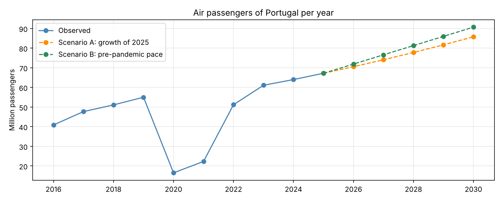

Problem
Portugal depends on its air links for tourism, the islands and the diaspora. Three questions:
- Reach: where can you fly from Portugal, directly and with one stop?
- Demand: where are the passengers, how full are the planes, how seasonal is traffic?
- Trend: how is demand evolving, and can the figures be kept up to date as new months arrive?
Data
Official Eurostat statistics, downloaded on 16 November 2026:
- the air routes declared by 35 European countries, with passengers, seats and flights, 2016 to 2024 (38 files);
- the monthly passengers of 496 European airports, January 2016 to 2026 (3 files);
- a public registry of airports, for names and coordinates.
Solution
One Databricks notebook organised in the medallion architecture: Bronze keeps the files as received (Parquet), Silver has the clean tables and Gold the tables that answer the questions (Delta). It uses PySpark DataFrames, Spark SQL, Structured Streaming and Unity Catalog.
- Parsing: the Eurostat files are text, not tables. 42 files are read in two statements and turned into
rows with
split,posexplodeandpivot. - Graph as a join: a journey with one stop is a join of the routes with themselves. About 6,000 routes become 923,384 one-stop journeys, which is why Spark is used.
- Streaming: the months of 2025 and then of 2026 arrive as JSON files; a checkpoint makes the second run read only the new files. The result is identical to a batch calculation.

Airports reached from the five main Portuguese airports in 2024, directly and within one stop.
Findings
| Question | Answer |
|---|---|
| Reach | Lisbon: 106 direct destinations, 562 within one stop (94% of the network). Porto: 77 direct, 91% within one stop. Funchal 79%, Faro 77%, Ponta Delgada 66%. |
| Main hub | Istanbul is a possible stop for 40% of the destinations that Lisbon cannot reach directly. |
| Demand | 67.2 million passengers in 2025. Lisbon handles 49%, Porto 23%, Faro 14%. Funchal grew 68% since 2019. Busiest route: Lisbon - Madrid, 1.91 million passengers. |
| Empty seats | Lisbon - Porto and Lisbon - Faro: about 72% of the seats occupied, 400,000 empty seats per direction in a year. |
| Seasonality | Busiest against quietest month: Faro 4.4, Ponta Delgada 2.8, Porto 1.9, Funchal 1.7, Lisbon 1.5. |
| Trend | The European network lost 49% of its routes in 2020 and is now 8% above 2019. Portugal grew 5.0% in 2025 and 3.7% in January to April 2026. |

Air passengers of Portugal per year, with two simple scenarios: 86 to 91 million in 2030.
Recommendations
- Promote Porto, Faro and the islands by their one-stop reach: 66% to 91% of the network.
- Review the domestic air routes, which fly with more than a quarter of their seats empty.
- Fill the winter in Faro; Lisbon, Porto and Funchal are stable all year.
Limitations
Route statistics end in 2024; only airport statistics reach 2026. The network is the European one. "One stop" means that both routes existed in the same year: timetables and prices are not in the data. The scenarios are reference lines, not a forecast.